A tiny mineral fed armies, taxed peasants, and humbled an empire.
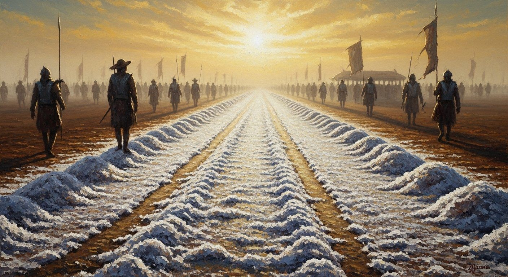
A poor family in winter could survive because of one dark piece of salted meat hanging from the ceiling.
No refrigerator hummed in the corner. No freezer waited in the next room. Outside, the fields were dead, the animals were thin, and the road to the next market was frozen or dangerous. But inside the house, salt had stopped time.
That is the real history of salt. It is not only a story about taste. It is a story about hunger, power, money, language, rebellion, and the strange way ordinary things can rule the world.
For thousands of years, salt decided whether food would last, whether workers could keep moving, whether armies could march, and whether governments could squeeze money from people who had no choice but to pay. It crossed deserts with gold. It moved through Roman roads. It became a weapon in France. In India, one quiet man used it to challenge the British Empire.
What is striking here is how small the object is. A pinch of salt can disappear between two fingers, yet whole kingdoms once built laws around it.
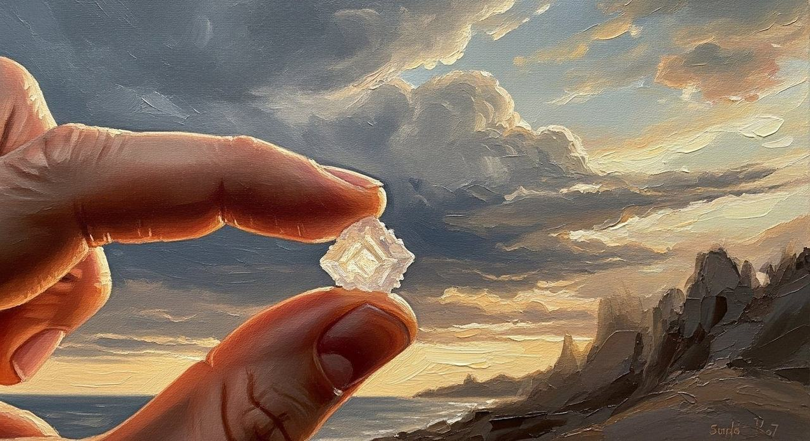
This article follows that white crystal from ancient brine pits to desert caravans, from the French gabelle to Gandhi’s march to the sea, and finally to the salt shaker on your table.
The Salt Road Through Time
Eight moments, one small crystal. Follow the salt road — from the first taste to your table today.
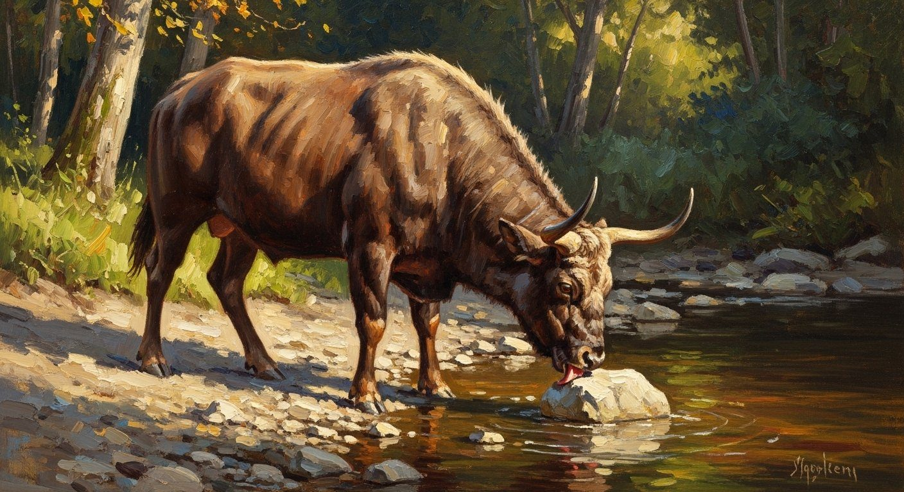
The First Taste
Animals find salt on rocks, and people follow them. The first towns grow near salt, not only near rivers — Jericho rises beside the Dead Sea.
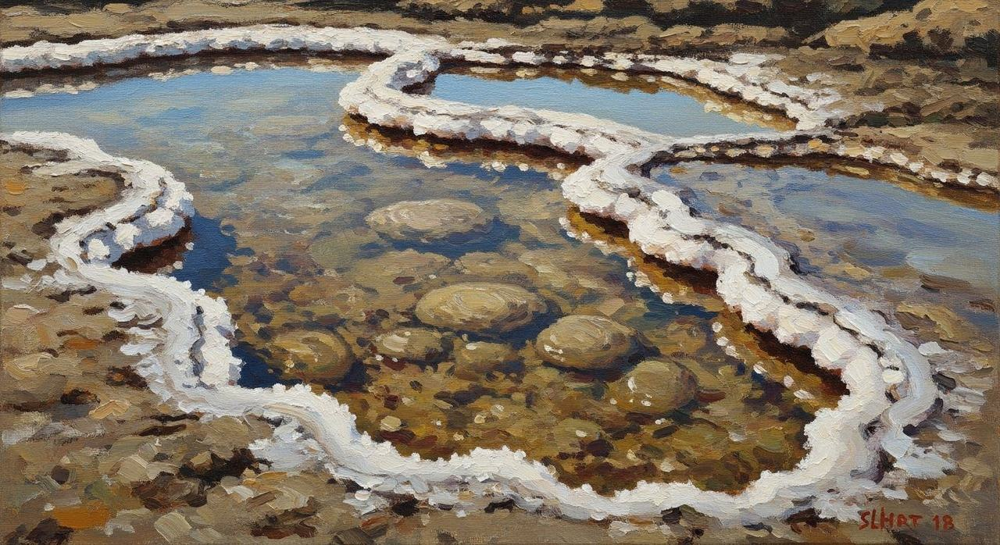
Salt Is Made, Not Found
In China, brine is boiled in clay pots until white crystals remain. Now salt can be stored, carried — and controlled.
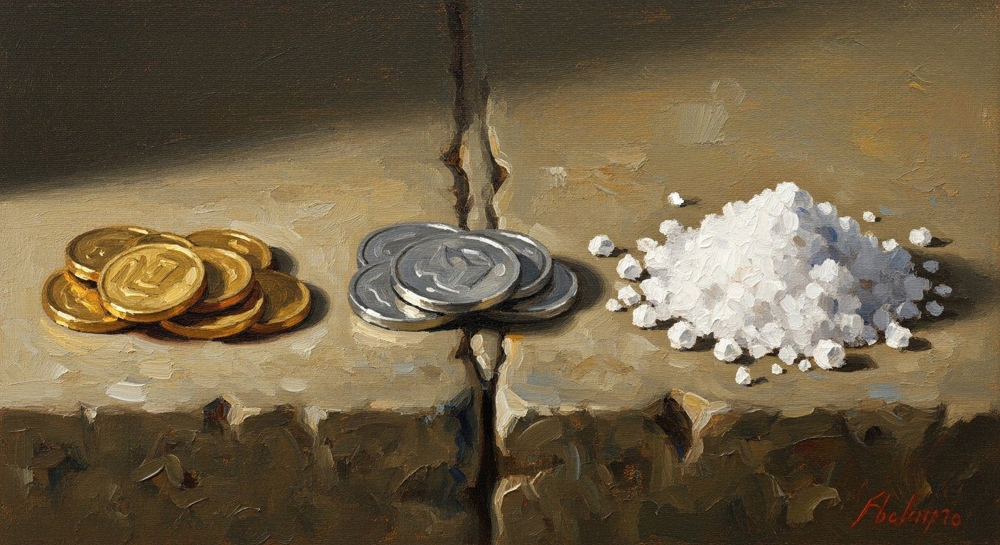
Rome Runs on Salt
The Via Salaria, the Salt Road, carries salt into the heart of the empire. Salt money leaves its taste in our word “salary”.
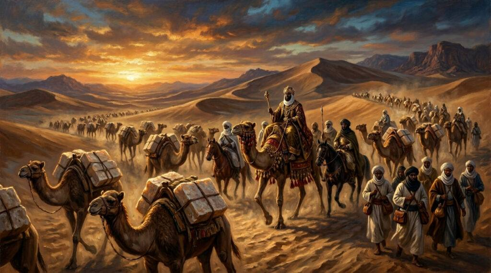
Salt for Gold
Mansa Musa’s Mali grows rich where desert salt meets southern gold. At Timbuktu, the two trade like equals.
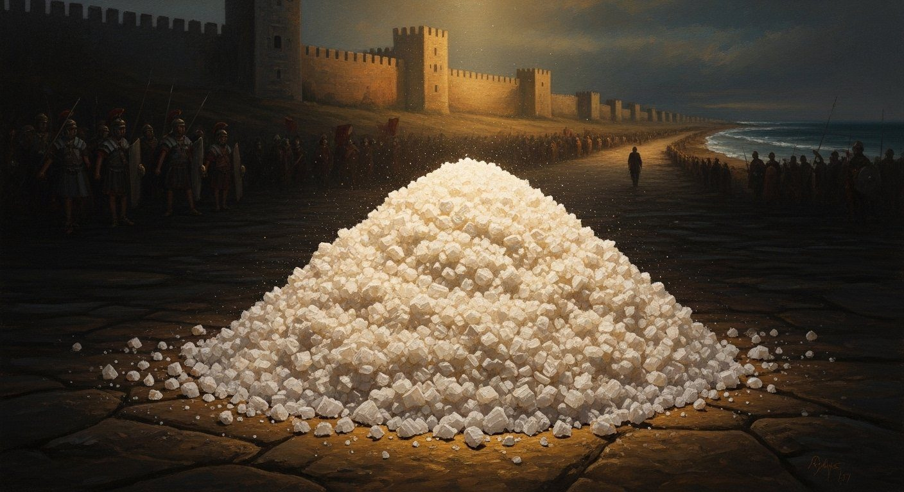
The Gabelle Is Born
France turns salt into a royal monopoly. The most hated tax in the kingdom begins with a white crystal.
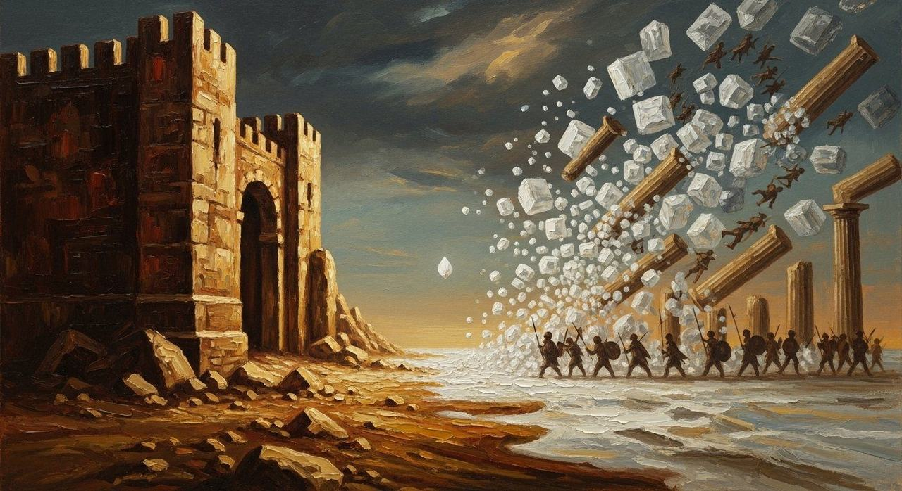
The Tax Falls
The Revolution abolishes the gabelle. After more than four centuries, the French may buy their salt freely again.
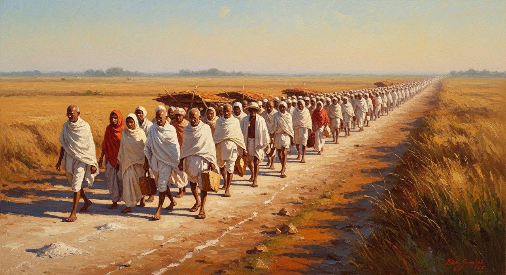
The March to the Sea
Gandhi walks 240 miles in 24 days, bends down at Dandi, and picks up a handful of salt. An empire feels the ground move.
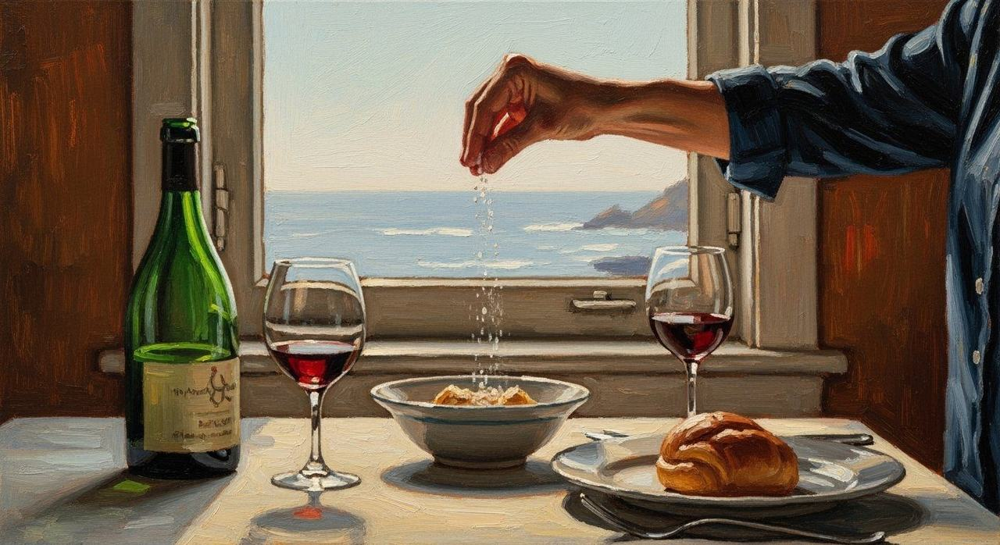
The Invisible Crystal
Salt costs almost nothing, and hides in everything we eat. The old fight was too little. The new fight is too much.
The Spring That Tasted Like Stone
A person kneels beside a strange spring and tastes the water. It is sharp, mineral, and stronger than any river water nearby.
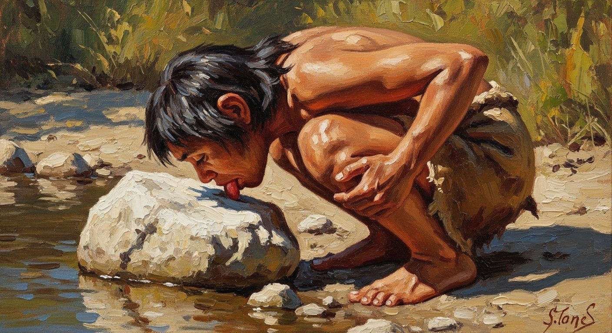
That scene is not recorded in any ancient diary. We do not know the name of the first person who discovered salt. The evidence here is thin, because salt disappears, dissolves, and leaves fewer traces than pottery or metal. But archaeology gives us a strong clue: people learned to follow salty water, salty earth, and animal tracks long before they wrote down why.
In China, one of the best studied early sites is Zhongba, in the Three Gorges region of the Yangzi River. Archaeologist Rowan Flad and other researchers studied pottery and chemical traces that point to specialized salt production there by the first millennium BC, with roots that may reach earlier. People were boiling brine in ceramic vessels and turning water into white crystals that could be stored, carried, taxed, and traded (see Source #1).
Imagine being the person who first saw crystals form at the bottom of a pot. You may not know chemistry. You only know that the water vanished and something useful remained.
The process was simple, but not easy. Workers needed brine, fuel, clay containers, time, and people who knew when to stop the boiling. A pot could crack. A fire could die. A spring could weaken. Still, the reward was worth it, because salt was not just seasoning. It was survival.
The body needs sodium and chloride to work. Nerves use sodium to send signals. Muscles need it to move. Blood and fluids depend on it. The need was physical before it was cultural. That may explain why humans and animals both sought salt-rich places.
The same human search for food and minerals appears in many HitoCast stories about the history of everyday things, where small objects become signs of bigger human needs.
The earliest salt makers did not create civilization alone. That would be too simple. But they did create something civilization loves: a useful thing that could be measured, stored, controlled, and moved.
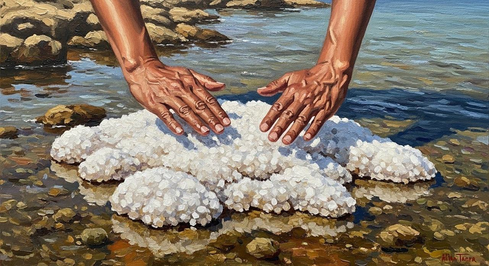
How Salt Turned Winter Into a Season People Could Survive
A piece of meat hanging in a smoky room could mean the difference between spring and starvation.
Before salt, fresh food had a cruel clock inside it. Meat spoiled. Fish rotted. Milk soured. Vegetables softened. In warm places, that clock moved even faster. Salt slowed the clock by pulling moisture out of food and making life harder for bacteria. This is why salted fish, cured meat, cheese, pickles, and preserved vegetables appear in so many food cultures.
Ancient Egypt gives one of the clearest early examples. By about 2000 BC, Egyptians used salt and natron in preservation, including food preservation and mummification. Natron, a naturally occurring mineral mixture, helped dry bodies for burial. The same basic logic applied to food: remove moisture, slow decay, keep life from turning into rot.
The detail most people overlook is that preservation changed distance. A fresh fish must be eaten near the water. A salted fish can travel. A piece of cured meat can feed a worker far from home. Salt turned food into cargo.
That change mattered for labor. Pyramid workers, sailors, soldiers, miners, and farmers all needed calories that could last. Herodotus, the Greek historian who lived in the 5th century BC, wrote about Egypt with a mix of observation and rumor. We should read him carefully. Still, his world reminds us that ancient labor depended on supply systems, not just muscle.
If you stop and think about that for a second, the pyramid is not only a monument of stone. It is also a monument of logistics.
Salt also shaped taste. People did not only use it because they had to. They learned to like what it did. It made bitterness softer. It made sweetness brighter. It made plain food feel more complete. That is why the history of salt belongs beside the history of bread and the history of cheese, because all three are stories of survival becoming culture.
Modern readers may imagine salt as cheap and common. In a supermarket, it is. But for most of human history, every grain represented labor: water carried, fuel burned, rocks mined, animals loaded, taxes paid.
The miracle was not that salt tasted good. The miracle was that it let tomorrow arrive with food still waiting.
Mansa Musa and the Desert Where Salt Met Gold
In the Sahara, people crossed hundreds of miles of burning sand for something that looked less impressive than a pebble.
The West African salt trade was built on a simple imbalance. The desert had salt. The forest and savanna zones to the south had gold, grain, kola nuts, ivory, and people who needed salt badly. Camel caravans linked these worlds. Salt slabs from places like Taghaza and later Taoudenni moved south, while gold moved north toward North Africa and the Mediterranean.
Mansa Musa, ruler of the Mali Empire in the early 14th century, stands at the center of this story. His famous pilgrimage to Mecca in 1324 carried so much gold that later writers said he disturbed gold prices in Cairo. Some accounts describe a huge caravan, thousands of attendants, and gifts so rich that the story became almost legendary.
The honest truth is that medieval numbers are often slippery. Chroniclers loved scale. They also loved rulers who seemed larger than life. But the core point is secure: Mali’s wealth rested on controlling trade routes, especially gold from the south and salt from the Sahara.
World History Encyclopedia notes that Saharan salt moved by camel caravan to trading centers such as Timbuktu, Niani, and Koumbi Saleh, then moved farther south or exchanged for other goods (see Source #9). Oxford’s Global History of Capitalism project also places Mansa Musa inside this larger system of gold, salt, faith, and storytelling (see Source #10).
There is a quiet irony in this trade. Gold became the symbol of wealth, but salt was the thing people could not live without.
Salt slabs were heavy. A caravan might travel for weeks. Camels needed water, guides needed knowledge, and traders needed protection. A wrong route could kill everyone. A sandstorm could erase the path. Yet the trade continued because the demand was constant.
Mansa Musa did not become powerful because he owned pretty metal alone. He ruled a world where geography made certain things rare in certain places. That is the heart of trade. One land has what another land lacks.
The Roman Road That Gave Us a Word for Work
The word on your paycheck may carry the ghost of salt.
Many people have heard the simple version: Roman soldiers were paid in salt, and that is where the word salary comes from. It is a beautiful story. It is also too clean.
The Latin word salarium is connected to sal, meaning salt. The English word salary does come through this family of words. But scholars disagree on the exact Roman practice behind it. Some older explanations say soldiers received salt or money for salt. More cautious modern classicists argue that direct evidence for literal salt wages is weak. The story may have grown bigger than the sources allow.
This is the part that does not add up perfectly, and that makes it more interesting, not less.
Rome did have a real Salt Road, the Via Salaria, which connected Rome with salt-producing areas near the Adriatic. The road mattered because salt mattered. Long before highways and trucks, roads were expensive political statements. A state built them because it needed movement: goods, messages, officials, soldiers.
A Roman official such as Appius Claudius Caecus, censor in 312 BC, is remembered for major road building, especially the Via Appia. He did not build the Via Salaria, which was older, but his career shows how deeply Rome understood roads as power. Roads made the republic more than a city. They turned space into control.
Salt, then, sits inside a bigger Roman pattern. It was a necessary commodity. It moved on state roads. It appeared in language. It joined food, medicine, sacrifice, and trade.
A careful editor may want to link this sentence to a specialist explanation of the disputed salary story because this is one of those cases where a popular fact needs a footnote.
The safer claim is this: salary is linked to salt in language, but the image of every Roman soldier receiving a bag of salt as pay is not proven.
That does not weaken the history of salt. It strengthens it. Real history is often better than the clean myth. Salt did not need to be every soldier’s wage to shape Rome. It only needed to be important enough to build roads, feed people, and enter the words we still use for work.
The Tax That Tasted Like Tears
A government that taxes bread may face anger. A government that taxes salt taxes the body itself.
France’s gabelle became one of the most hated taxes of the old monarchy. In the 14th century, the word could mean different duties, but by the 15th century it became closely tied to salt. The system was not only expensive. It was uneven. Some regions paid more than others. Some privileged groups were exempt. Some families had to buy a fixed amount of salt from royal stores whether they wanted it or not.
Britannica describes the gabelle as a salt tax before the French Revolution and notes that nobles, clergy, and some privileged people were exempt (see Source #4). That detail matters. A tax can hurt. An unequal tax humiliates.
King Philip VI and later French kings expanded royal control over salt as the monarchy searched for money. By the time of Louis XVI, who ruled from 1774 until 1792, the gabelle had become a symbol of a state that demanded obedience but offered little fairness in return.
What’s striking here is not only the price. It is the insult. Salt was everywhere in nature, yet ordinary people were told when, where, and how they could buy it.
Smuggling became common. So did punishment. A poor person who tried to avoid the tax could be treated like a criminal for wanting cheaper salt. In some places, the difference between legal and illegal salt was simply a border on a map.
Harvard Business School research published in 2025 discussed how unequal salt-tax burdens helped deepen resentment before the French Revolution (see Source #5). That modern research is useful because it shows the gabelle was not just a colorful complaint. It was part of a larger political system that made people feel trapped.
HitoCast readers who enjoy this pattern may also like the history of sugar, another everyday substance tied to sweetness, money, and suffering.
Gandhi Picked Up Salt and Shook an Empire
On April 6, 1930, Mohandas Karamchand Gandhi bent down at the seashore and picked up salt.
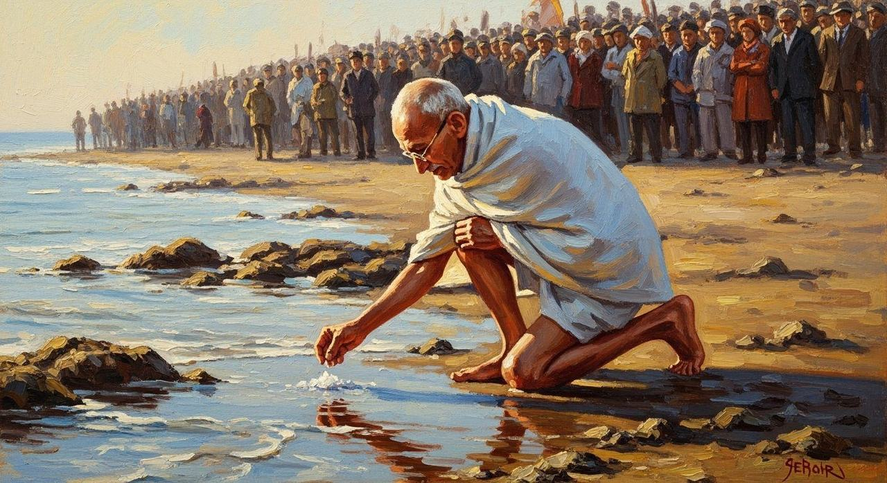
The act was tiny. The meaning was enormous.
Salt was never just salt. It was the shape of control.
British colonial law controlled salt in India and taxed it heavily. This hurt poor people most because everyone needed salt, not only the rich. Gandhi understood the power of choosing an object that every person could understand. He did not choose a rare legal issue. He chose the taste of daily life.
On March 12, 1930, Gandhi left Sabarmati Ashram with a small group of followers. The march to Dandi covered about 241 miles and lasted 24 days. By the time he reached the sea, crowds had grown, newspapers were watching, and the British government faced a political problem it could not easily solve.
It is hard not to admire the strategic beauty of that choice. Salt was humble enough for the poor, visible enough for the press, and moral enough to expose the absurdity of empire.
Gandhi was already known for satyagraha, his method of nonviolent resistance. But the Salt March gave that idea a physical shape. People could see it. A man walked. A crowd followed. A law was broken without a weapon.
Official Gandhi resources describe the march from Sabarmati to Dandi and the symbolic breaking of the salt law (see Source #7). HISTORY also notes the 241-mile march and its challenge to British colonial rule (see Source #6).
Within weeks, tens of thousands of Indians were arrested in the wider civil disobedience campaign. The British still had police, prisons, ships, and weapons. But Gandhi had chosen something the empire could not make look dangerous without making itself look foolish.
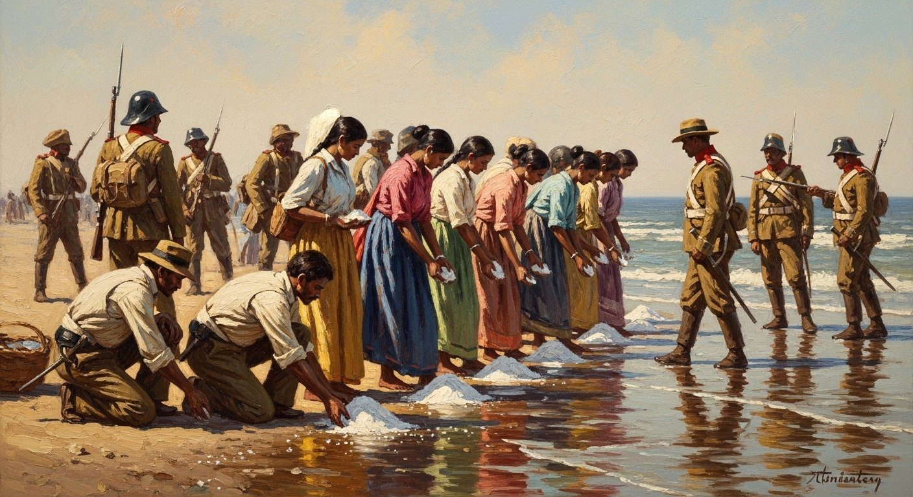
For context on other ordinary objects that became political symbols, see the history of tea, especially the way tea became tied to empire, protest, and identity.
The Salt Shaker Became a Health Warning
The ancient problem was too little salt. The modern problem is too much.
That reversal is one of the strangest turns in food history. For thousands of years, people worked hard to get salt. Now many public health systems work hard to help people eat less of it. The World Health Organization reported in 2025 that the global mean adult sodium intake is about 4,310 mg per day. That equals about 10.78 g of salt, more than double WHO’s recommended limit of less than 2,000 mg sodium, or under 5 g of salt per day (see Source #8).
To put that in perspective, the thing that once saved winter food now hides in bread, sauces, snacks, instant noodles, processed meats, and restaurant meals.
This does not mean salt became evil. The body still needs it. The problem is the food system around it. Modern industry uses salt for taste, texture, preservation, and profit. A person can eat too much without touching a salt shaker at all.
Scientists, doctors, and food companies now debate salt reduction, potassium-enriched salt substitutes, labeling, and reformulation. Some countries have tried national policies. Others rely on advice. The result is uneven.
There is a quiet lesson here, but not a simple one. The same mineral can be medicine in one century and risk in another. Context changes the meaning.
The story of salt now belongs not only to historians but also to nutrition researchers, cardiologists, food engineers, and ordinary families reading labels in supermarkets. WHO’s sodium reduction work shows that salt is still political, but the battlefield has moved from royal tax offices to packaged food shelves.
A useful external link for readers is WHO’s page on global sodium intake, because it explains the modern health side in plain numbers.
Who Really Owns Something the Earth Gives Away?
Salt forces a question that never fully disappears: can anyone own what everyone needs?
The answer has changed across time. In ancient China, states learned to control salt production and taxation. In medieval France, the monarchy turned salt into revenue. In colonial India, the British claimed the power to decide who could collect salt from the sea. In modern food systems, companies do not own salt itself, but they shape how much of it enters our bodies.
Scholars still debate many details. Who first discovered salt? We do not know. How exactly did salarium work in Rome? The evidence is debated. How many people truly joined the Salt March movement in each district of India? Records vary. How much did the gabelle directly cause the French Revolution compared with bread prices, debt, bad harvests, and political ideas? No single cause is enough.
History rarely lets a story end cleanly.
Still, some patterns are clear. Salt becomes powerful when three things meet: universal need, uneven access, and political control. That formula appears again and again. It explains the salt mines of Khewra, where UNESCO notes exploitation for at least 1,000 years. It explains Saharan caravans. It explains Gandhi’s march.
Named people help us see the scale. Rowan Flad studied ancient production. Mansa Musa embodied trade wealth. Louis XVI inherited a tax system many people hated. Gandhi turned salt into resistance. Each person touched salt from a different angle: archaeology, empire, monarchy, protest.
The final question is not only historical. It is personal. What ordinary thing around us is quietly shaping our lives right now?
For another story about a humble material that changed daily life, read the history of soap.
Salt began as a need of the body. It became a tool of states. Then it became a symbol of freedom. That is a long road for something small enough to vanish on your tongue.
What a Grain of Salt Teaches Us
Every HitoCast story leaves something behind. Here is what this small crystal leaves with us.
- Small things can carry great weight. A grain of salt is almost nothing. Yet it built roads, paid soldiers, fed armies, and shook an empire.
- Salt gave people time. Before fridges, salt let food travel and wait. And that let cities grow, armies march, and journeys stretch across deserts.
- Power hides in what everyone needs. Kings rarely taxed jewels. They taxed salt — because no family could say no.
- Freedom can begin quietly. Gandhi did not raise an army. He walked to the sea and picked up what the earth gives for free.
- Enough is a kind of wisdom. For thousands of years, the danger was too little salt. Today it is too much. The lesson is balance.
Frequently Asked Questions About Salt
Why was salt so valuable in history?
Salt was valuable because it preserved food, supported human health, and allowed people to store and transport meat, fish, and vegetables. Before refrigeration, this mattered deeply. Salt also became easy to tax and trade because everyone needed it. That made it useful not only for families, but also for governments, armies, and merchants.
Who first discovered salt?
No one knows the name of the first person who discovered salt. Early humans likely found it by tasting salty springs, following animals to salt licks, or collecting crystals from dried seawater. Archaeological evidence from places such as China shows organized salt production thousands of years ago, but the first discovery happened long before written records.
Was salt really used as money?
Salt was used as a valuable trade good in many places, and in some societies it could function like money because it was useful, portable, and widely desired. The Roman “salary” story is more complicated. The word salary is linked to Latin words connected with salt, but direct proof that Roman soldiers were literally paid in salt is weak.
What was the salt tax?
A salt tax was a government charge on buying, selling, or producing salt. It was powerful because salt was essential. France’s gabelle became especially hated because it was expensive, uneven, and forced some families to buy fixed amounts. British salt laws in India also became a major symbol of colonial injustice.
Why did Gandhi march for salt?
Gandhi marched for salt because British law controlled and taxed a basic necessity in India. Salt was simple, universal, and easy for poor people to understand. By walking to Dandi in 1930 and making salt from the sea, Gandhi turned a small act into a clear challenge against British rule.
Where did the word salary come from?
The word salary comes from Latin roots connected with salt, especially salarium. The common story says Roman soldiers were paid in salt, but historians debate that exact claim. A safer explanation is that salary comes from a salt-related Latin word, while the details of Roman payment are less certain than popular versions suggest.
Why is too much salt bad for health?
The body needs some salt, but too much sodium can raise blood pressure and increase the risk of heart disease and stroke. WHO recommends less than 2,000 mg of sodium per day for adults, equal to under 5 g of salt. Many people consume more than double that amount, often through processed foods.
The Small Thing That Refused to Stay Small
Salt is easy to ignore because it is close to us.
It waits in a jar. It falls from our fingers. It disappears into soup, bread, meat, and noodles. But its history shows that ordinary things are rarely only ordinary. They become powerful when bodies need them, when markets move them, and when rulers try to control them.
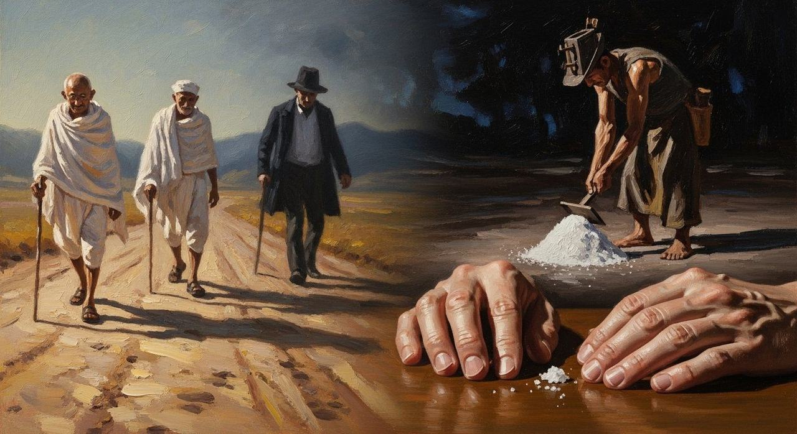
That is the quiet force of salt. It fed workers who built monuments. It crossed deserts beside gold. It entered our words for work. It exposed unfair taxes. It gave Gandhi a way to make empire look small.
The next time you see a few white grains on a table, do not only see seasoning. See a road, a mine, a march, a law, a winter meal, and a human hand reaching for survival.
A grain of salt is small, but history has never measured power by size.
Words to Take With You
Eight words from this story, in simple English — take them with you.
crystal
nounA small, hard piece of a mineral, with a clear shape.
Salt is a crystal you can eat.
preserve
verbTo keep food safe and good to eat for a long time.
Salt preserves meat and fish through the winter.
empire
nounMany lands ruled by one powerful leader or one powerful country.
The British Empire once controlled India's salt.
tax
nounMoney that people must pay to their government.
The gabelle was a tax on salt.
monopoly
nounWhen only one seller controls something that everyone needs.
The king held a monopoly on salt in France.
smuggle
verbTo move something secretly, against the law.
Poor families smuggled salt to survive the gabelle.
march
nounA long walk by many people together, to protest or to make a point.
Gandhi's Salt March covered 240 miles in 24 days.
freedom
nounBeing free — able to live and choose without another's control.
A handful of salt became a symbol of freedom.
Summary
- Salt mattered because it preserved food long before machines could keep anything cold.
- Early Chinese salt makers boiled brine and helped turn salt into organized industry.
- The salt and gold trade helped power West African cities and empires.
- The famous Roman salary story is partly true, partly debated, and often oversimplified.
- France’s salt tax became a symbol of unfair power before the French Revolution.
- Gandhi chose salt because everyone needed it, especially the poor.
- Our modern problem is the opposite of the ancient one: too much salt, not too little.
Sources and Further Reading
We told this story using the sources below. If you would like to read more, these are good places to begin.
- PNAS — the archaeology of early salt making in China (Flad et al.)
- Cambridge University Press — Flad, Salt Production and Social Hierarchy in Ancient China
- Penguin Random House — Mark Kurlansky, Salt: A World History
- Encyclopaedia Britannica — the gabelle, France's salt tax
- Harvard Business School — mapping the salt tax that helped shatter a monarchy
- HISTORY — when Gandhi's Salt March rattled British colonial rule
- M. K. Gandhi — Salt Satyagraha and the Dandi March
- World Health Organization — the sodium reduction fact sheet
- World History Encyclopedia — the salt trade of ancient West Africa
- University of Oxford — Mansa Musa: gold, salt, and storytelling
- UNESCO — the Salt Range and Khewra Salt Mine
- Smithsonian Magazine — Mark Kurlansky on the cultural importance of salt
A Note from HitoCast
This article was researched and written by the HitoCast editorial team. We cross-checked facts across 12 sources, including academic archaeology on early Chinese salt production, public health data from WHO, and historical references on West African trade, French taxation, and Gandhi’s Salt March. If you spot an error or have a source to recommend, please email us. We update articles regularly.